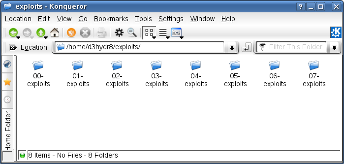
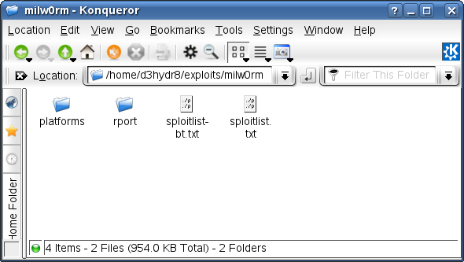
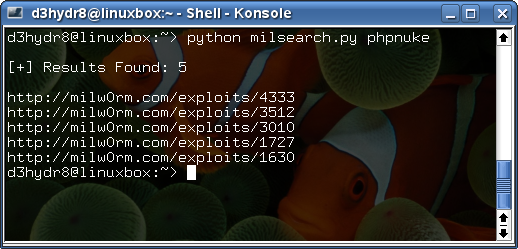
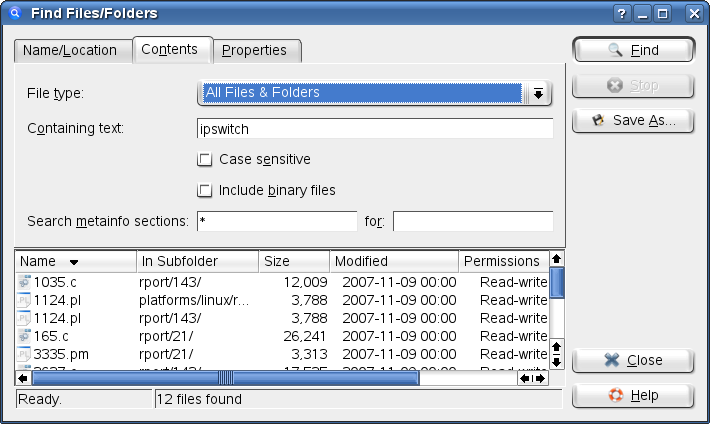

How to build a local exploit database.
by d3hydr8 > www.darkc0de.com
Date: 03/07/08
In this tutorial I will show you several tools to create
your own local exploit database and how to search through
it. The 2 sites we will be using to gather exploits are
milw0rm and packetstorm. Well, first lets discuss why you
would need a local exploit database. Any answers? Here's mine,
because I can...
There are 3 scripts we will be using to create our database.
The first thing you need to deside is where you want your
exploits stored. Each script has a HOME_DIR option that needs
to be filled out according to your location (unless you like
/home/d3hydr8).
The first script will extract all exploits from packetstorm
from 2000-previous year. First, it will do a time check to
make sure the last year in the YEARS list is the previous year.
Years list:
YEARS = ["00","01","02","03","04","05","06","07"]
This is the first time I have used raw_input in one of my
scripts. It will show you the last year in the list and
the current year. Then ask you if this is correct. Like
shown below:
d3hydr8@linuxbox:~> python packext.py
[+] Checking Years
Last year: 07 Current Year: 08
Is this correct? Yes or No
Here is the c0de and a link:
http://www.darkc0de.com/misc/packext.py
#!/usr/bin/python
#This script will extract all exploits
#from packetstorm from 2000-previous year.
#http://darkc0de.com
#d3hydr8[at]gmail[dot]com
import urllib, tarfile, os, sys, time
HOME_DIR = "/home/d3hydr8/"
YEARS = ["00","01","02","03","04","05","06","07"]
#Time check
now = time.strftime("%Y", time.localtime())[2:]
print "\n[+] Checking Years\n"
if now == YEARS[-1]:
print "[!] The last year in YEARS cannot be the present year.\n"
sys.exit(1)
else:
print "Last year:",YEARS[-1],"Current Year:",now
resp = raw_input("\nIs this correct? Yes or No ").lower()
if resp == "no":
print "\n[!] Modify YEARS list correctly.\n"
sys.exit(1)
elif resp == "yes":
print "\n[+] Starting extraction"
else:
print "\nHUH?\n"
sys.exit(1)
#Make sure HOME_DIR ends with a "/"
if HOME_DIR[-1] != "/":
HOME_DIR = HOME_DIR+"/"
print "[+] Dir:",HOME_DIR,"\n"
#Extraction process
for year in YEARS:
print "Start: 20"+year
try:
os.chdir(HOME_DIR+year+"-exploits")
except(OSError):
os.mkdir(HOME_DIR+year+"-exploits")
os.chdir(HOME_DIR+year+"-exploits")
page = "http://packetstormsecurity.org/"+year+"12-exploits/20"+year+"-exploits.tgz"
urllib.urlretrieve(page, "20"+year+"-exploits.tgz")
tar = tarfile.open("20"+year+"-exploits.tgz")
tar.extractall()
tar.close()
os.remove("20"+year+"-exploits.tgz")
print "Done: 20"+year
print "\n[++] Operation Complete\n"
Here is what you should see when your done:
d3hydr8@linuxbox:~> python packext.py
[+] Checking Years
Last year: 07 Current Year: 08
Is this correct? Yes or No Yes
[+] Starting extraction
[+] Dir: /home/d3hydr8/exploits/
Start: 2000
Done: 2000
Start: 2001
Done: 2001
Start: 2002
Done: 2002
Start: 2003
Done: 2003
Start: 2004
Done: 2004
Start: 2005
Done: 2005
Start: 2006
Done: 2006
Start: 2007
Done: 2007
[++] Operation Complete

Now that we have all of the exploits from packetstorm through the
previous year. Lets use milw0rm to get an archive of remote ports
and platforms.
http://www.darkc0de.com/misc/milarchive.py
#!/usr/bin/python
#Extracts exploit archive for remote
#ports and platforms from milw0rm.
import urllib, tarfile, os
HOME_DIR = "/home/d3hydr8/"
#Make sure HOME_DIR ends with a "/"
if HOME_DIR[-1] != "/":
HOME_DIR = HOME_DIR+"/"
print "\n[+] Dir:",HOME_DIR,"\n"
try:
os.chdir(HOME_DIR)
except(OSError):
os.mkdir(HOME_DIR)
os.chdir(HOME_DIR)
print "[!] Downloading file..."
page = "http://www.milw0rm.com/sploits/milw0rm.tar.bz2"
urllib.urlretrieve(page, "milw0rm.tar.bz2")
print "[!] Extracting files..."
tar = tarfile.open("milw0rm.tar.bz2")
tar.extractall()
tar.close()
os.remove("milw0rm.tar.bz2")
print "\n[!] Operation Complete\n"
#Or
#wget http://www.milw0rm.com/sploits/milw0rm.tar.bz2
#tar -xjvf milw0rm.tar.bz2
#rm milw0rm.tar.bz2
#:)
Output:
What this does is create a milw0rm folder with the
directories platforms and rports.
d3hydr8@linuxbox:~> python milarchive.py
[+] Dir: /home/d3hydr8/exploits/
[!] Downloading file...
[!] Extracting files...
[!] Operation Complete

So, now we have packetstorm, remote port and platforms
but what about webapp exploits? The script below will
help you collect all the webapp exploits from milw0rm.
It will go page by page collecting 30 exploits at a
time and write them to your HOME_DIR+/milw0rm/. The script will
finish when it gets a xplt list length of zero 3x.
Becareful with this tool, set your times accordingly. Milw0rm
does have a DDOS protection with automatic ip blocking.
http://www.darkc0de.com/misc/milwebappext.py
#!/usr/bin/python
#Attempts to collect all webapp
#exploits from milw0rms DB.
import urllib2, time, os, re, urllib
HOME_DIR = "/home/d3hydr8/exploits"
site = "http://www.milw0rm.com/webapps.php?start="
#Time to wait between page loads (in secs)
TIME = "3"
#Make sure HOME_DIR ends with a "/"
if HOME_DIR[-1] != "/":
HOME_DIR = HOME_DIR+"/"
print "\n[+] Dir:",HOME_DIR,"\n"
HOME_DIR = HOME_DIR+"milw0rm/"
try:
os.chdir(HOME_DIR)
except(OSError):
os.mkdir(HOME_DIR)
os.chdir(HOME_DIR)
start = 0
error = 0
while error != 3:
try:
time.sleep(int(TIME))
print "[+] Page:",start
source = urllib2.urlopen(site+str(start), "80").read()
xplts = re.findall("href=\"/exploits/\d+",source)
print "[+] Exploits Found:",len(xplts)
except(urllib2.URLError):
xplt = []
pass
for xplt in xplts:
time.sleep(0.5)
xplt = xplt.replace("href=\"","")
urllib.urlretrieve("http://www.milw0rm.com"+xplt, HOME_DIR+xplt.rsplit("/",1)[1])
if len(xplt) == 0:
error +=1
start +=30
print "\n[!] Operation Complete\n"
Looking more closely at that c0de I'm guessing
you might be able to just change some site info
like exploits >> papers and collect all papers
(or whatever else).
This next script is just a utility for searching
for exploits from the command line from milw0rm.
http://www.darkc0de.com/misc/milsearch.py
#!/usr/bin/python
#Milw0rm exploits search tool.
import urllib2, re, sys
if len(sys.argv) != 2:
print "\nUsage: ./milsearch.py [search]"
print "Ex: ./milsearch.py phpmyadmin\n"
sys.exit(1)
site = "http://www.milw0rm.com/search.php?dong="
try:
source = urllib2.urlopen(site+sys.argv[1], "80").read()
xplts = re.findall("href=\"/exploits/\d+",source)
print "\n[+] Results Found:",len(xplts),"\n"
except(urllib2.URLError):
xplts = []
pass
if len(xplts) >=1:
for xplt in xplts:
xplt = xplt.replace("href=\"","")
print "http://milw0rm.com"+xplt
else:
print "\nNo Results Found\n"
Output:

Now your thinking, "Ok, I have a database of exploits
but how would I keep it up to date?". The script
below will help with this task. It will check milw0rm
for new exploits and download them to your HOME_DIR
if found. The default time is set to check every 5
minutes.
http://www.darkc0de.com/misc/milupdate.py
#!/usr/bin/python
#Checks milw0rm.com for exploit updates.
import urllib2, time, os, re, urllib
HOME_DIR = "/home/d3hydr8/exploits"
site = "http://www.milw0rm.com/"
#Time to wait for update checks (in secs)
TIME = "300"
#Make sure HOME_DIR ends with a "/"
if HOME_DIR[-1] != "/":
HOME_DIR = HOME_DIR+"/"
print "\n[+] Dir:",HOME_DIR,"\n"
HOME_DIR = HOME_DIR+"milw0rm/"
try:
os.chdir(HOME_DIR)
except(OSError):
os.mkdir(HOME_DIR)
os.chdir(HOME_DIR)
done = []
while 1:
time.sleep(int(TIME))
try:
source = urllib2.urlopen(site, "80").readlines()
for line in source:
if re.search("class=\"style15", line):
xplts = re.findall("href=\"/exploits/\d+", line)
except(urllib2.URLError):
xplts = []
pass
if len(xplts) >=1:
for xplt in xplts:
if xplt not in done:
done.append(xplt)
xplt = xplt.replace("href=\"","")
print "[+] Adding: http://www.milw0rm.com"+xplt
urllib.urlretrieve("http://www.milw0rm.com"+xplt, HOME_DIR+xplt.rsplit("/",1)[1])
print "[+] Collected:",len(done),"exploits\n"
If you haven't found an online module to search
through your exploits and bought the domain "exploits4fun.com"
there are a couple ways to search them. The first is use your
GUI search utilty that comes with your os. If using KDE's
Find Files/Folders just change your Name/Location to your
HOME_DIR and use the Contents tab to do the rest.

Or just use your find cmd. I hope this tutorial and tools
were fun. I realize this stuff is pretty much useless when
you could just visit the sites but I had fun writing it. And
remember, because I can...